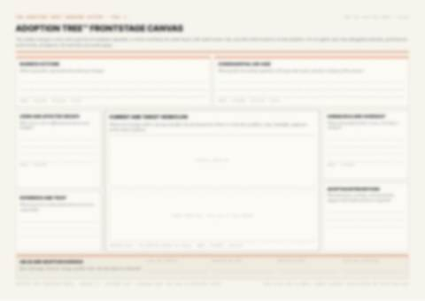
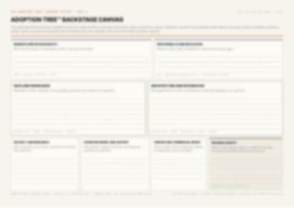
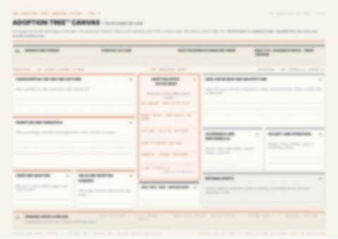
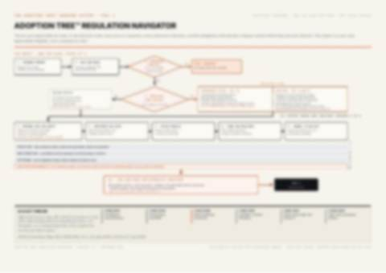
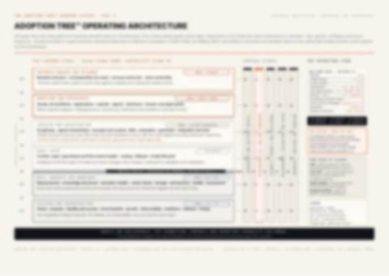
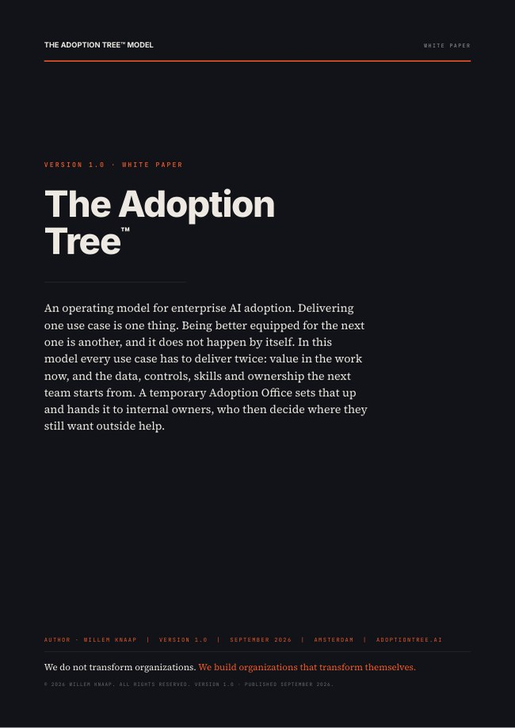

The use case
One piece of real work, live with real users. The unit of delivery, evidence and learning.
An operating model for enterprise AI adoption
Build AI capability that stays.
From one working AI use case to an organization that transforms itself.
One working AI use case is not the goal. The ability to repeat it is. The Adoption Tree™ Model takes an organisation from its first use case to many, and turns that into a transformed way of working.
AI adoption is the ability to turn AI into trusted, governed, used and measurable ways of working. The Adoption Tree™ Model connects a successful use case to the capability needed to sustain and repeat it.
One piece of real work, live with real users. The unit of delivery, evidence and learning.
One end-to-end workflow with an accountable owner. The unit of transformation and scale.
The data, controls, patterns, skills and ownership that every next wave inherits.
Based on the white paper · Executive summary, pp. 2–3
The model in one picture: above ground the use cases people see, below ground the capability the organisation keeps. Every use case that goes live feeds the roots, so the next one grows faster.
Read it as a tree. The branches are the use cases people see and use. The trunk is the temporary Adoption Office that runs them. The roots are the foundation: six blocks of capability the organization keeps. Every use case that goes live feeds the roots, and the next one grows from them.
The foundation enables the use case.
The use case makes the foundation stronger.
Hover or tap a use case to watch what it feeds back into the roots.
Sponsor, domain owner and decision rights: who may release, scale, stop and accept risk.
Approved sources, access, quality and provenance the next wave reuses.
An owned foundation with connected systems and replaceable models.
Intended purpose, oversight, evaluation and release evidence, designed in from the start.
Tasks redesigned with the people who do them; competent use built through coaching.
Outcomes against a baseline; the value decision, assets reused and ownership transferred.
The six foundation blocks · White paper, pp. 11–12
Six gates are six steps from use case to adoption: a fixed route so nothing is skipped, a team so everything is recorded, and a named role for everyone. Each wave leaves the organisation with learnings it keeps.
Each gate is a decision with a named owner and minimum evidence. A wave that cannot show the evidence waits, changes or stops. Select a gate to see what it takes.
Name the sponsor, domain owner and internal successor. Agree the outcome, budget, boundaries, foundation cap and mandate end date.
Select a bounded piece of work within the domain, with real users and a measurable outcome. Establish its intended purpose and complete the applicability screen.
Define the target workflow, human oversight, architecture, evaluation thresholds, coaching and support. Each control has an accountable owner.
The use case works as built and runs under its required controls, so it is released to a defined workflow and user group. Monitoring, support, human oversight and rollback are ready.
Compare outcomes with the baseline and check the business case against what production produced. Decide whether to scale, change or stop, and which reusable assets become maintained defaults.
Internal owners sign a real release pack and chair the next wave’s mandate and selection decisions. The external team observes in silence.
Three tracks run alongside delivery
Nothing is built before Gate 1, nothing goes live before Gate 3, no realization decision before Gate 4. Waiting time (procurement, access, reviews) runs on its own clock; plan 9 to 12 months elapsed in a regulated enterprise.
Gate logic and reference calendar · White paper, pp. 13–14, 23
AI keeps moving faster. The capability built here moves with it, because it is owned inside the organisation and stays after the Adoption Office has handed over.
A jointly staffed office runs one domain wave. Internal successors are named on day one and take over the rhythm as the wave goes on; an internal Adoption Capability of trained coaches stays.
Named internal roles and routines take over. The Adoption Coach stays. The mandate per domain is two to three waves, with the end date written into Gate 0.
The exit is demonstrated
Gate 5 transfers ownership. A 90-day review checks that operation and ownership have held.
The Adoption Office, coaching and exit test · White paper, pp. 21–22, 27–29
Everything is measurable: what a use case is worth to the organisation, what you steer on, and whether the organisation learns and grows in capability, wave after wave.
Every measure has an owner, an evidence location and a date. Time saved needs a realization decision: how does it become capacity, service, revenue, risk reduction or another business outcome?
Check quality, cost, incidents, oversight, active task use, workarounds, trust and workload in production.
Compare cycle time, quality, throughput or service with the baseline. Record the business owner’s value decision.
Track assets consumed and produced, internal decision-making, support ownership and the ability to change suppliers.
Seven measurement layers · White paper, pp. 17–20
We wrote the white paper to map this whole system of AI adoption capability into one model, one paper and five practical tools that walk you through the steps.
The white paper includes five practical canvases. They share identifiers so a use case can be followed from visible work through its foundation, obligations and architecture.

Map the use case, people, workflow, human oversight and evidence of adoption.

Connect governance, data, architecture, operations and the assets the next wave inherits.

Bring visible delivery and the capability foundation into one management view.

Record intended purpose, applicability, obligations, accountable owners and evidence.

Map the layers, interfaces, decisions and ownership behind the working capability.
The five tools are included on pp. 34–38 of the full white paper.
Forty-three pages of research and working tools: the model, six gates, decision rights, measurement, the transfer test and five canvases. Identify yourself with your work email and the access link arrives in your inbox.
The link in the email is personal and valid for 7 days. Not there after a few minutes? Check your spam folder, or .

Enterprise sponsors, domain leaders, product and delivery teams, architects, control owners and workforce leaders who need AI to become a dependable way of working. The white paper is oriented toward the European enterprise context.
It is an operating model: a way to connect business ownership, production delivery, responsible operation and internal capability. Its tools can be used alongside your existing platforms and governance.
No. Each wave should inherit approved assets and leave useful additions behind. Readiness is assessed before Gate 0. If it is too weak, the first step is a readiness project or a smaller use case.
No. A chosen, priced and replaceable specialist can remain. What should decline is dependence on a particular external party to make decisions, challenge them, substitute a supplier or exit an arrangement.
A named budget line does, agreed before the handover rather than at it. The cost side is built at the same gates as the benefit side: a candidate envelope at Gate 0, a first run-cost estimate at Gate 2, metered consumption during bounded production, and both halves measured at Gate 4. At Gate 5 the domain owner accepts the run cost into a budget line.
Version 1.0 is a design proposal, published for comment and field evaluation. It combines established ideas; the complete configuration has not yet been evaluated in practice. The reference case is illustrative and the timings are planning assumptions.
Agree what will go live.
And who will run it after.